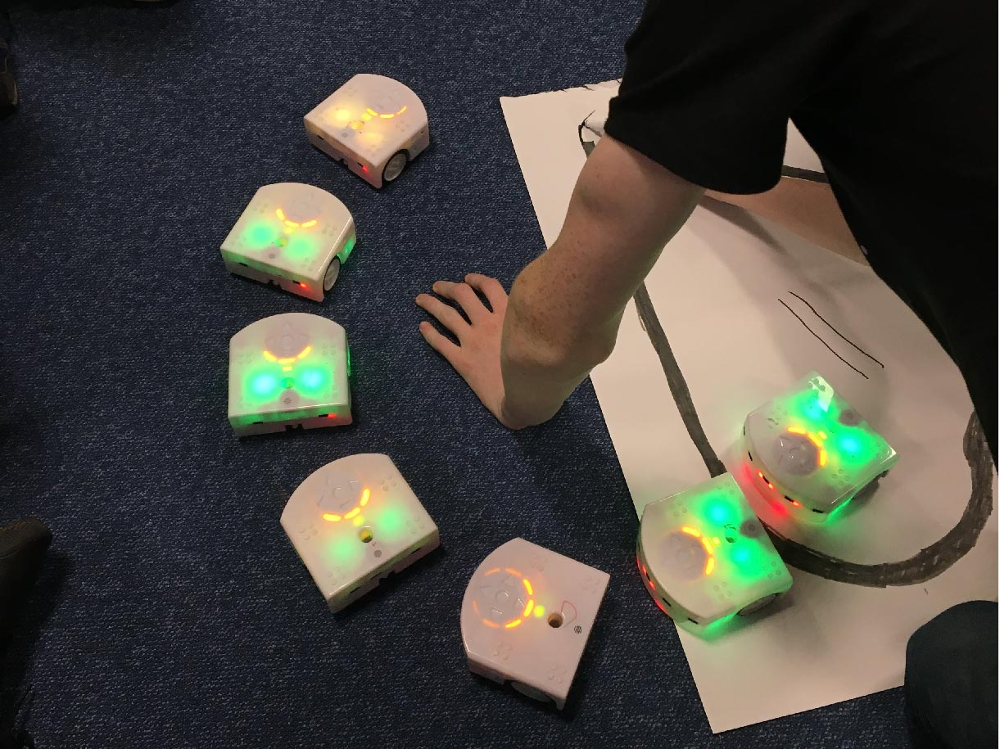

< back to research
Outreach projects and workshops
Sharing our research with the public is important to me, as well as teaching skills and encouraging students in STEM fields. We have showcased our research to the public at events such as Research Without Borders and FUTURES @ We the Curious as well as at an inspire talk at the KWMC: The Factory Find out more on similar projects on the community page.
I also enjoy creating and co-facilitating workshops on design and prototyping for beginners, such as creating soft robots or animatronic puppets. Please get in touch if you are interested in running something together!


